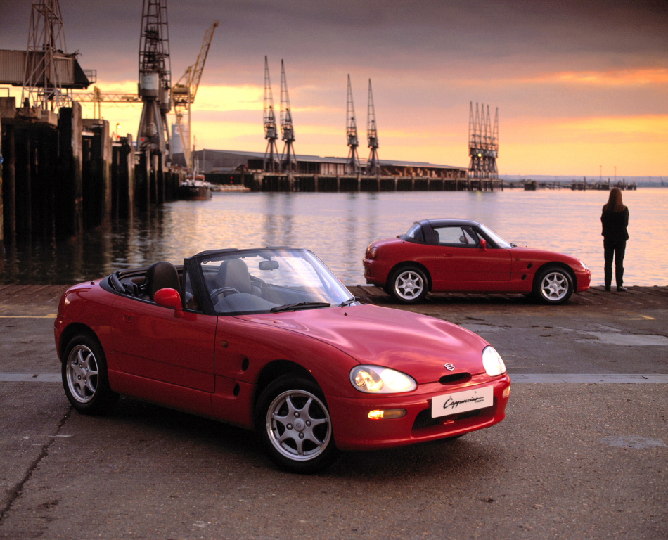
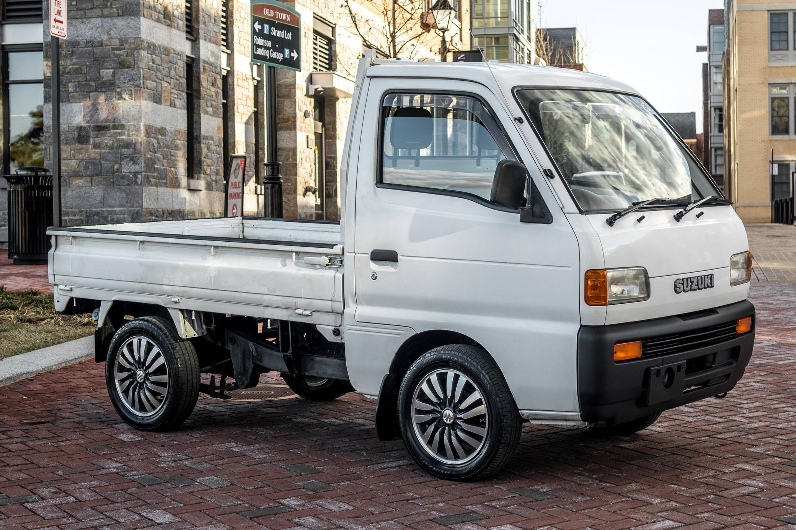
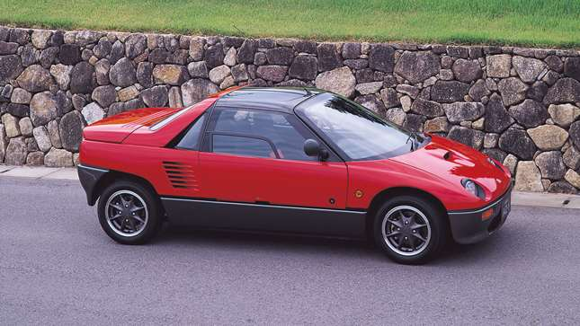
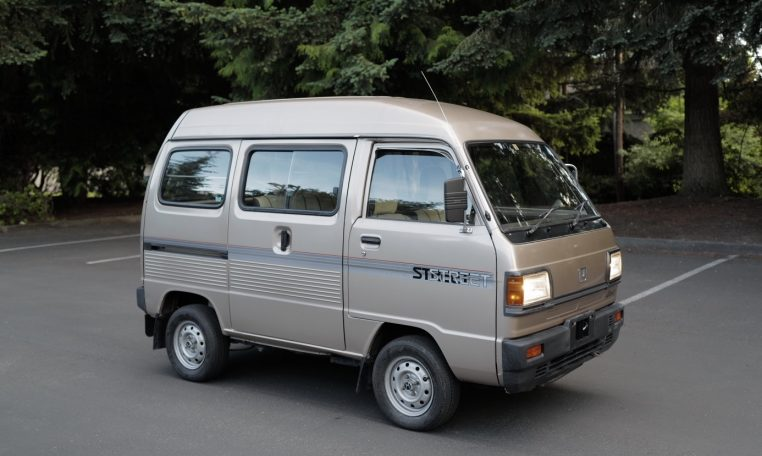

What is a Kei Car?
A kei car is a small, fuel-efficient vehicle designed specifically for the Japanese market. They are known for their compact size, low emissions, and affordable prices. Kei cars typically have a maximum engine displacement of 660cc and adhere to strict government regulations regarding dimensions and weight.
How much do they cost?
Kei cars are generally more affordable than larger vehicles, making them a popular choice for budget-conscious drivers. The cost of a Kei car can vary depending on factors such as the model, year, mileage, and condition. While Kei cars offer excellent value for money, it's important to consider long-term costs, including maintenance, fuel consumption, and potential resale value

What models are there?
  - Kei trucks are small commercial vehicles designed for transporting goods and materials. They are often used for deliveries, construction, and landscaping tasks
- K-vans are a popular type of Kei car known for their spacious interiors and versatility, making them ideal for families and commuters.
- Kei sports cars are high-performance Kei cars that prioritize speed and agility. They are popular among driving enthusiasts who enjoy thrilling driving experiences.
Where to buy?
Check out online auctions, dealerships, or direct from owners for the widest selection.
Cars From Japan Craigslist